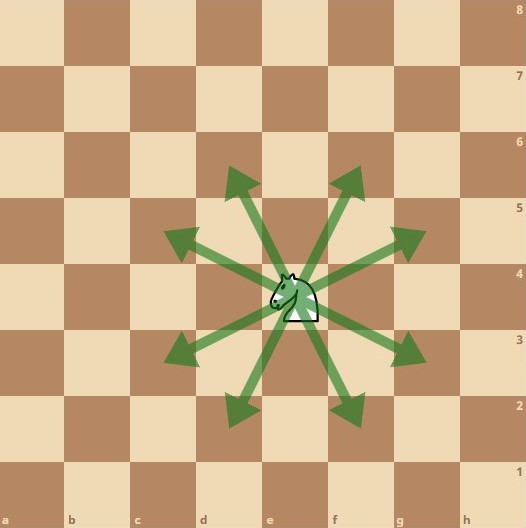
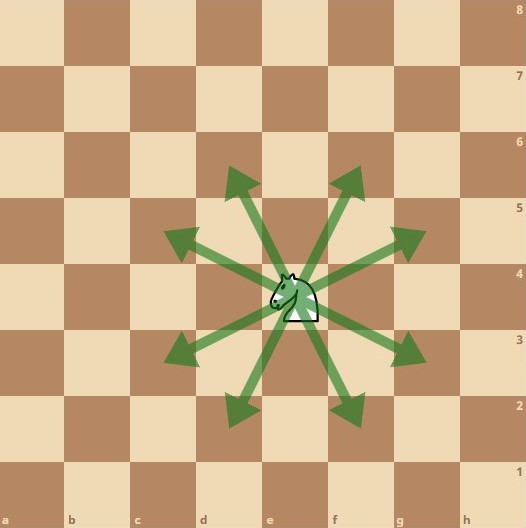

Meu hobbie
Um dos meus grandes e favoritos hobbies, é jogar Xadrez!

Como jogar xadrez?
Para início de conversa, jogamos xadrez em um TABULEIRO 8x8, visto que possuí 8 linhas e 8 colunas
Podemos associar a ideia do tabuleiro, como uma matriz de 8 linhas e 8 colunas: matriz[8][8]
Peças de Xadrez
Ao todo, cada jogador inicia a partida com 16 peças, e dessas, 6 peças são diferentes.
São ao todo:
- 1 rei
- 1 dama
- 2 torres
- 2 bispos
- 2 cavalos
- 8 peões
Torres
- As torres são posicionadas nas extremidades do tabuleiro, na primeira linha.
- MOVIMENTO: o movimento executado pelas torres é sempre em paralelas (linhas ou colunas), quantas casas desejar desde que haja espaço livre.
- Lembre-se de que as peças não podem "saltar" outras, tanto horizontais quanto verticais, veja a ilustração a baixo:
- CAPTURA: em todas as casas em que pode se movimentar.
Cavalos
- Os cavalos deverão ser posicionados cada um ao lado interno de cada torre.
- MOVIMENTO: o cavalo anda em um formato que reproduz a letra L, ou seja, duas casas, na direção horizontal ou vertical, e mais uma, em ângulo reto à direção anterior. É a única peça que pode pular as próprias peças ou as do adversário. Embora o número de movimentos possíveis do cavalo seja maior, seu uso é limitado pelo número de casas em que ele consegue se mover (uma em qualquer direção, outra em diagonal).
 

- Nota-se que sempre que movemos o cavalo a partir de uma casa com determinada cor, passando-o para uma casa de outra cor.
- CAPTURA: a peça adversária que se encontrar na casa onde o cavalo terminar seu movimento.
Bispos
- Os bispos posicionam-se um ao lado interno de cada cavalo

- MOVIMENTO: seu movimento é sempre em diagonal, obedecendo à cor de sua casa inicial, ou seja, o bispo da casa branca não pode ocupar uma casa preta e vice-versa, ficando eternamente na mesma cor desde o inicio até o final do jogo. Observe a ilustração ao lado. O bispo ao lado, por ser da casa de cor branca, jamais poderá conseguir ameaçar uma peça do adversário que ande nas casas de cor preta.

- CAPTURA: em todas as casas em que pode se movimentar
Dama (ou Rainha)
- A dama é posicionada no centro do tabuleiro, na casa de sua cor.
- MOVIMENTO: peça mais poderosa e versátil do tabuleiro, a dama pode movimentar-se como a torre e como o bispo, ou seja, anda tanto em paralelas (linhas ou colunas) quanto em diagonais, tantas casas quanto se desejar, desde que haja espaço no tabuleiro.
- CAPTURA: em todas as casas em que pode se Movimentar
Rei
- Rei, entre seu bispo e a dama, sempre observando que o REI branco fica na casa de cor PRETA e o REI preto fica na casa de cor BRANCA (invertido).

- MOVIMENTO: somente anda uma casa por lance em todas as direções. Não pode situar- se em casa sob domínio de peça adversária, pois o rei não pode se entregar ou se colocar em situação de XEQUE jamais. Esta jogada não é permitida e ambos os jogadores devem estar atentos.

- CAPTURA: em todas as casas em que pode se movimentar. Não pode capturar peças defendidas pelo adversário, pois seria capturado no próximo lance, colocando-se antecipadamente em XEQUE, o que também não é permitido.
Peões
- É a peça mais simples e a mais encontrada no tabuleiro: são ao total, 8 peões para cada jogador
- Os devem ser posicionados à frente das outras peças, portanto, na segunda linha
- Uma casa desocupada à frente

- Quando o peão está em sua casa inicial, pode mover-se uma ou duas casas adiante, somente no primeiro movimento de cada peão.

- O Peão não pode andar para trás em hipótese alguma.
- Se você andar pela primeira vez com o peão somente uma casa, na próxima jogada, não é permitido usar a opção de abrir com 2 casas.

- CAPTURA: somente nas casas em diagonal (uma casa apenas) à frente, conforme mostra a flecha.

Algumas regras básicas para início do jogo:
- As peças brancas iniciam a partida.
- As peças não podem saltar sobre peças do adversário, com eh3xceção do cavalo.
- Ao se tomar uma peça do adversário, a peça jogada deverá ocupar esta mesma posição
- Por convenção, quando um tabuleiro é mostrado em um diagrama, as pretas ficam na
parte de cima
- Não é permitido que se coloque o próprio rei em xeque, o jogador, nesse caso, deve ser avisado e a jogada retornada
- Quando o rei estiver em xeque, este deve ser protegido, não sendo permitido outro tipo de jogada.
- Não é permitido a volta de lances, isto é, quando um jogador pega, intencionalmente ounão, em uma peça, deve, necessariamente, efetuar a jogada com esta peça. Salvo casos em que a peça tocada não tiver lance legal possível. E ainda, se, com sua mão ou peça, um jogador tocar em alguma peça do adversário, com a intenção de capturá-la ou não,deve, necessariamente, efetuar a captura. Salvo casos em que a jogada não for legalmente possível
Xeque e Xeque Mate
XEQUE
- Toda vez que o rei estiver sob ataque direto, significa que ele está em xeque. Dar xeque em um rei é movimentar uma peça cujo sua, em que o raio de ação ataque diretamente o rei inimigo.

XEQUE-MATE
- Xeque-mate é quando o rei está sob ataque de peça contrária e não tem como sair da situação. Significa o término da partida, com a vitória para quem deu o xeque-mate. Este é o objetivo do jogo: deixar o Rei inimigo totalmente encurralado e sem saída.

- Observe, que a dama cobre todas as casas de fuga do rei. A única possibilidade, seria a tomada da dama. Porém, a torre defende e impede essa tomada. Assim sendo, o rei não tem como fugir, culminando em XEQUE-MATE e consequente VITÓRIA PARA AS BRANCAS.
Aberturas e Defesas mais comuns e mais utilizadas
Retirado e adaptado de: https://www.chess.com/pt-BR/article/view/aberturas-xadrez-para-iniciantes
As aberturas e defesas sitadas abaixo são consideradas regulares.
Abertura Ruy Lopez
- A Ruy Lopez é uma das aberturas mais antigas e clássicas de todas. O nome foi dado após um bispo espanhol escrever um dos primeiros livros de xadrez. A Ruy Lopez ataca o cavalo que defende o peão 5e. As brancas usam esse ataque na esperança de causar pressão ao centro das pretas.
 Créditos: https://www.chess.com/
Créditos: https://www.chess.com/
Abertura Italiana
- O objetivo é controlar rapidamente o centro com o seu peão e cavalo, e então colocar o bispo em uma das casas mais perigosas. O jogador também estará se preparando para fazer o roque.
 Créditos: https://www.chess.com/
Créditos: https://www.chess.com/
Defesa Siciliana
- A Defesa Siciliana é a escolha mais popular para jogadores agressivos quando estão com as pretas. Normalmente as brancas vão jogar ganhando a casa central, mas permite às pretas se beneficiar trocando o peão central pelo peão do bispo
Créditos: https://www.chess.com/
Defesa Francesa
- A Defesa Francesa é uma das primeiras estratégias de abertura que um jogador de xadrez deve aprender. Depois de e5 (agora ou mais tarde), ambos os lados terão fileiras de peões. Um dos riscos da Defesa Francesa é que pode ser bem difícil desenvolver o bispo em c8.
 Créditos: https://www.chess.com/
Créditos: https://www.chess.com/
Defesa Eslava
- A Defesa Eslava é uma abertura bastante sólida que defende o peão d5 de forma segura. As peças das Pretas podem se desenvolver para as casas naturais, mas as Pretas geralmente ficam com pouco espaço.
 Créditos: https://www.chess.com/
Créditos: https://www.chess.com/
As aberturas e defesas sitadas abaixo são consideradas irregulares.
Ataque Bongcloud
É considerada uma abertura de piada e está associada ao humor do xadrez na Internet. Seu uso pode insinuar que o branco está se auto-prejudicando, como um desafio auto-imposto. Os streamers da Twitch, como o Grandmaster Hikaru Nakamura, o usaram no xadrez blitz (partida rápida que dura 3 ou 5 minutos) online, incluindo jogos contra adversários de alto nível, como o campeão mundial de xadrez Magnus Carlsen. O nome também foi aplicado a outras sequências de abertura nas quais um dos jogadores move o rei no segundo lance.
Abertura Grob
É provavelmente uma das mais excêntrica de todas as aberturas ao lado da própria Defesa Grob porque na teoria o avanço inicial g4 contribui em nada para o desenvolvimento e/ou domínio das casas central, segundo a teoria clássica do xadrez, e ainda enfraquece a ala do rei das brancas.
Defesa Grob
É provavelmente uma das mais excêntrica de todas as defesas ao lado da própria Abertura Grob porque na teoria o avanço inicial g5 não contribui em nada para o desenvolvimento e/ou domínio das casas centrais, segundo a teoria clássica do xadrez, e ainda enfraquece a ala do rei das negras. Ainda se não bastasse a iniciativa das brancas na abertura.

Todas as imagens foram geradas por mim mesmo através da ferramenta de editor de tabuleiro do Chess.com
As imagens que não foram geradas lá, foram retiradas de um artigo na mesma plataforma